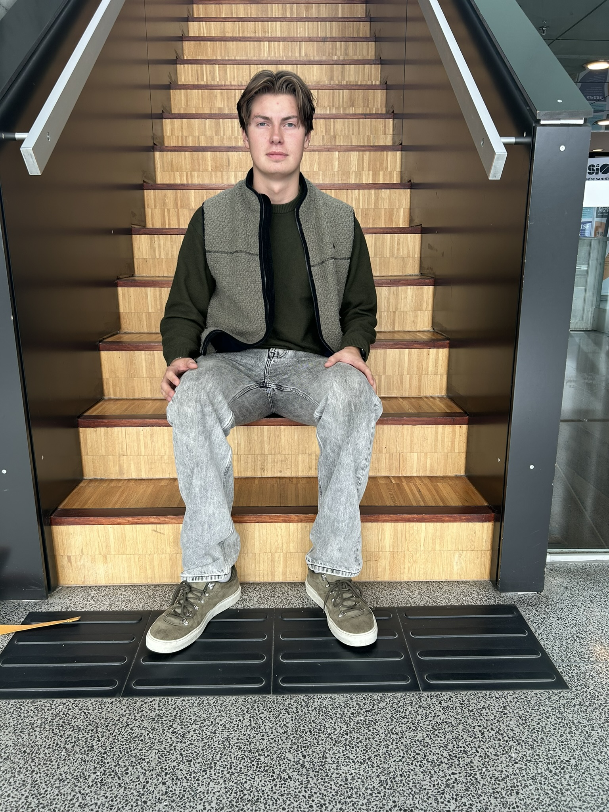

«Utfordringer med å fylle studieplasser»
Færre søkere til høgskolen i østfold
«Dramatisk nedgang for lærerutdanningene»
"Høgskolen i Østfold (HiØ) har opplevd en betydelig nedgang i antall søkere til studiene sine sammenlignet med tidligere år.»
Denne trenden skiller seg fra det nasjonale bildet, der det generelt har vært en liten økning i antall søkere til høyere utdanning. Hva tenker studentene ved HiØ om dette, og hvorfor har de valgt å søke, til tross for den generelle utviklingen? Dette var noe vi bestemte oss for å komme til bunns i, og vi tok kontakt med en førsteårsstudent ved navn Mats Pettersen.
Hvorfor valgte du Hiof på tross av den synkende trenden?

Jeg valgte HiØ av flere grunner. Først og fremst bor jeg i Halden, så det var praktisk for meg å studere her. Men det var ikke bare av praktiske årsaker.Jeg har hørt at informatikkstudiet her er godt, med dyktige fagfolk som gir tett oppfølging. Jeg tror at et mindre studiested som HiØ kan tilby en mer personlig tilnærming til undervisningen, noe som er viktig for meg. Da jeg har litt ekstra utfordringer når det kommer til konsentrasjon og slike ting.
Du sier du sliter med konsentrasjonen din, spilte dette inn når du valgte HiØ?
Ja, her er det færre distraksjoner enn i en storby, og det er lettere å fokusere på studiene. Jeg liker også at det er et tett miljø, der lærerne har tid til å gi individuell oppfølging. Det gjør det lettere for meg å holde fokus og få den hjelpen jeg trenger.
Hva tenker du om at færre søker seg til høgskoler og universiteter utenfor storbyene, som HiØ?

Jeg forstår at mange tiltrekkes av storbyene, men for meg har det å velge en mindre skole vært positivt. Mange overser fordelene med mindre skoler som HiØ. Jeg føler at jeg får mer personlig oppfølging her, noe som er viktig når man har utfordringer som konsentrasjonsproblemer. Selv om det har vært en nedgang i søkertallene, tror jeg HiØ har mye å tilby dem som trenger et roligere, mer fokusert miljø for å lykkes akademisk. Det er viktig å huske at ikke alle trives i store, anonyme studiemiljøer noen av oss trenger noe mer personlig og tilpasset.
Avslutningsvis, er du bekymret for den utviklingen vi ser i samfunnet? Og hadde du tatt samme valg igjen?
Jeg synes det er bekymringsfullt at færre søker seg til skoler utenfor storbyene, fordi det kan føre til at mindre studiesteder får færre ressurser og kanskje må kutte i tilbudet sitt. Men personlig ville jeg definitivt ha tatt samme valg igjen. HiØ har vært det rette valget for meg, spesielt med mine utfordringer. Jeg tror at det å være på et mindre sted har gitt meg muligheten til å fokusere bedre og få den støtten jeg trenger. Så selv om trenden i samfunnet er bekymringsfull, føler jeg at jeg har gjort det riktige valget for meg selv.